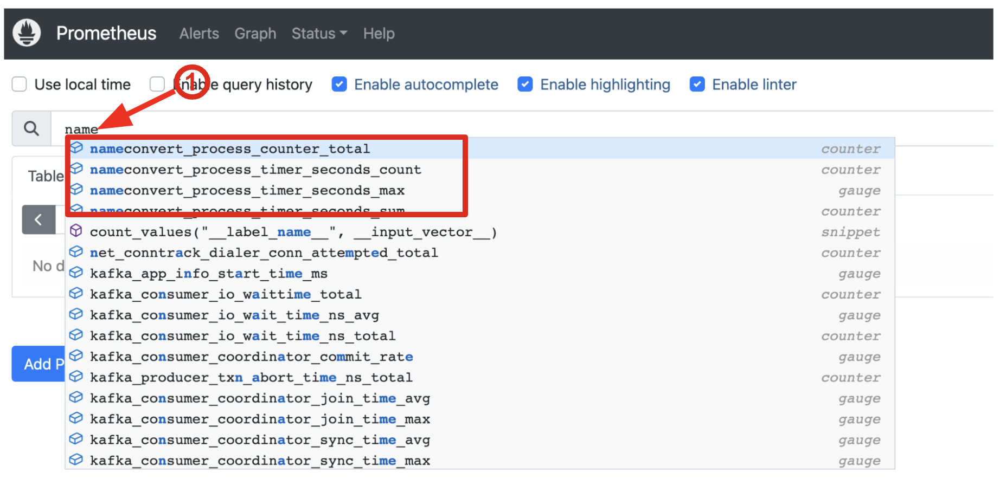
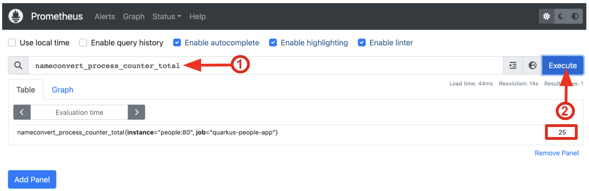
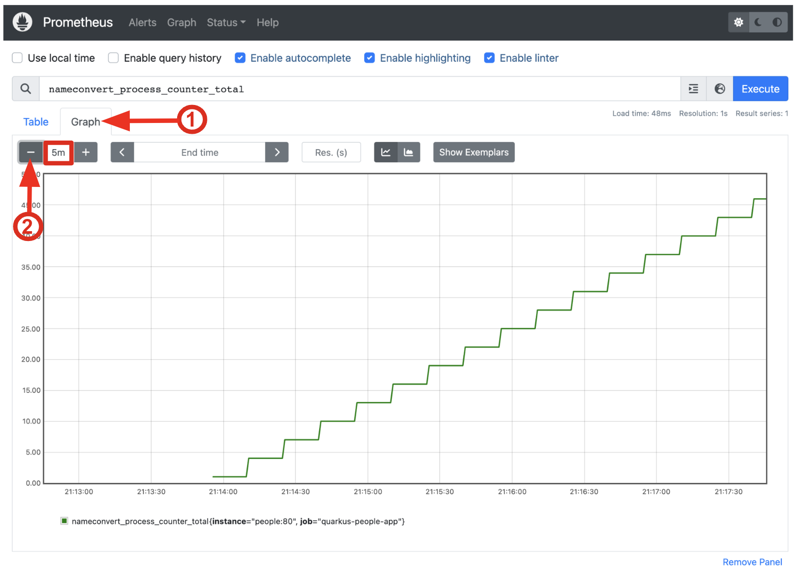
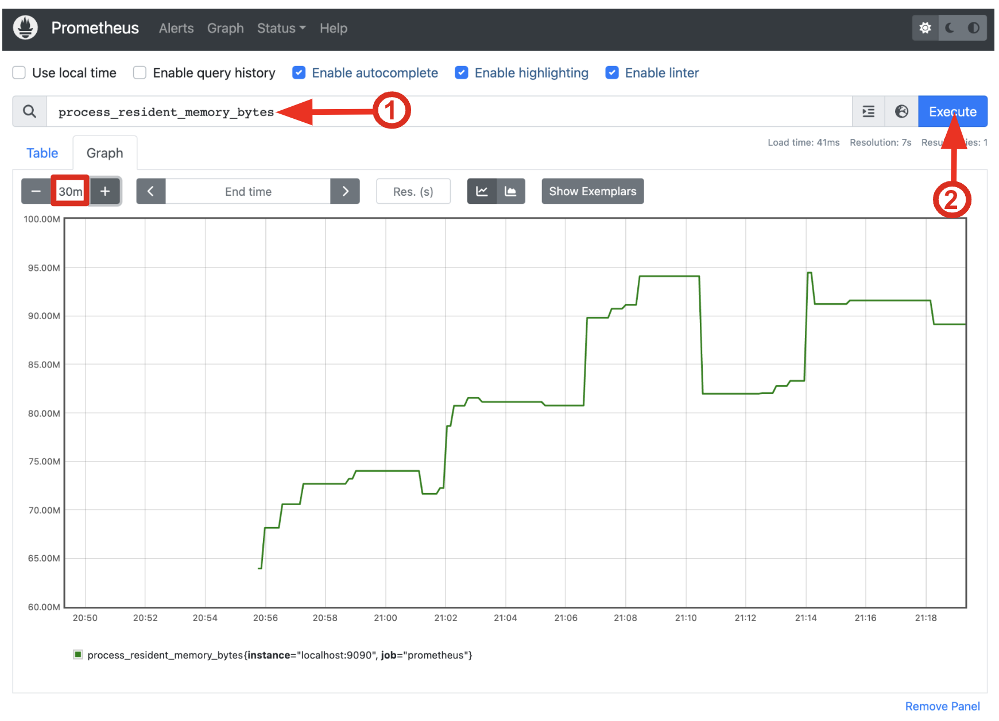

Monitoring Quarkus Apps using Micrometer
This exercise demonstrates how your Quarkus application can utilize the Micrometer Metrics specification through the Micrometer Registry Prometheus extension.
Micrometer allows applications to gather various metrics and statistics that provide insights into what is happening inside the application. They serve to pinpoint issues, provide long term trend data for capacity planning and pro-active discovery of issues (e.g. disk usage growing without bounds). Metrics can also help those scheduling systems decide when to scale the application to run on more or fewer machines.
Micrometer defines a core library and a set of additional libraries that support different monitoring systems. Quarkus Micrometer extensions are structured similarly: quarkus-micrometer provides core micrometer support and runtime integration and other supporting Quarkus and Quarkiverse extensions bring in additional dependencies and requirements to support specific monitoring systems.
The metrics can be read remotely using JSON format or the OpenMetrics text format, so that they can be processed by additional tools such as Prometheus, and stored for analysis and visualisation. You can then use tools like Prometheus and Grafana to collect and display metrics for your Quarkus apps.
Install Prometheus
First, let’s install Prometheus. Prometheus is an open-source systems monitoring and alerting toolkit featuring:
-
a multi-dimensional data model with time series data identified by metric name and key/value pairs
-
PromQL, a flexible query language to leverage this dimensionality
-
time series collection happens via a pull model over HTTP
To install it, first create a Kubernetes ConfigMap that will hold the Prometheus configuration. In the Terminal, run the following:
oc create configmap prom --from-file=prometheus.yml=src/main/kubernetes/prometheus.ymlThis will create a ConfigMap using the contents of the src/main/kubernetes/prometheus.yml file in your project (we’ve created this file for you). It contains basic Prometheus configuration, plus a specific target which instructs it to look for application metrics from both Prometheus itself, and our people app, on HTTP port 8080 at the /q/metrics endpoint. Here’s a snippet of that file:
scrape_configs:
- job_name: 'prometheus' (1)
static_configs:
- targets: ['localhost:9090']
- job_name: 'quarkus-people-app' (2)
metrics_path: '/q/metrics'
static_configs:
- targets: ['people:8080']| 1 | Configures Prometheus to scrape metrics from itself |
| 2 | COnfigures Prometheus to scrape metrics from Kubernetes service people on port 8080 with HTTP, at the default metrics endpoint of /q/metrics |
Deploy Prometheus from Container Image
On the {{ CONSOLE_URL }}/topology/ns/{{ USER_ID }}-project[Topology View for your project^], right-click on +Add to Project, and choose "Container Image"
Type in quay.io/prometheus/prometheus in Image Name from external registry field. You will see green checked icon and Validated under the input box.
Next, fill out the following fields:
-
Application:
Create Application -
Application Name:
prometheus -
Name:
prometheus
Leave the rest as-is and select Create:
On the {{ CONSOLE_URL }}/topology/ns/{{ USER_ID }}-project[Topology View for your project^], you’ll see prometheus spinning up.
Finally, mount the ConfigMap into the running container:
oc set volume deployment/prometheus --add -t configmap --configmap-name=prom -m /etc/prometheus/prometheus.yml --sub-path=prometheus.yml|
In case you see Warning: would violate PodSecurity "restricted:v1.24", you can ignore it during the workshop. |
You should get deployment.extensions/prometheus volume updated and this will cause the contents of the ConfigMap’s prometheus.yml data to be mounted at /etc/prometheus/prometheus.yml where Prometheus is expecting it, and it will start scraping metrics from our app. But our app does not yet expose metrics. We’ll do that in the next step.
Verify Prometheus is up and running:
oc rollout status -w deployment/prometheusYou should see deployment "prometheus" successfully rolled out.
Once it completes, select on the arrow to access the prometheus query UI:
Which should load the Prometheus Web UI (we’ll use this later). If you see a dark mode, you can simply turn it off:
Add Metrics to Quarkus
Like other exercises, we’ll need another extension to enable metrics. Install it with:
mvn quarkus:add-extension -Dextensions="micrometer-registry-prometheus"You should see:
[INFO] [SUCCESS] ✅ Extension io.quarkus:quarkus-smallrye-metrics has been installed
[INFO] [SUCCESS] ✅ Extension io.quarkus:quarkus-micrometer-registry-prometheus has been installedThis will add the necessary entries in your pom.xml to bring in the Metrics capability. It will import the micrometer-registry-prometheus extension which is an implementation of the Micrometer specification used in Quarkus.
Test Metrics endpoint
You will be able to immediately see the raw metrics generated from Quarkus apps. Run this in the Terminal:
curl http://localhost:8080/q/metricsYou will see a bunch of metrics in the OpenMetrics format:
# TYPE http_server_connections_seconds summary
http_server_connections_seconds_active_count 1.0
# HELP http_server_bytes_written_max
# TYPE http_server_bytes_written_max gauge
http_server_bytes_written_max 4096.0
# TYPE http_server_bytes_written summary
http_server_bytes_written_count 2.0This is what Prometheus will use to access and index the metrics from our app when we deploy it to the cluster.
Add additional metrics
Out of the box, you get a lot of basic JVM metrics which are useful, but what if you wanted to provide metrics for your app? Let’s add a few using the Micrometer APIs.
Open the GreetingResource class (in the org.acme.people.rest package). Let’s add a metric to count the number of times we’ve greeted someone. Add the following MeterRegistry specification:
private final MeterRegistry registry;
GreetingResource(MeterRegistry registry) {
this.registry = registry;
}Replace the hello() method with the following code for adding the counter API:
@GET
@Produces(MediaType.TEXT_PLAIN)
@NonBlocking
public String hello() {
registry.counter("greeting.hello.counter").increment();
return "hello";
}Also, add the necessary import statement at the top of the file:
import io.micrometer.core.instrument.MeterRegistry;|
You can also hover over the red error line and choose Quick Fix to add the import. |
Next, trigger a greeting:
curl http://localhost:8080/helloAnd then access the metrics again, this time we’ll look for our new metric, specifying greeting in the URL:
curl -s http://localhost:8080/q/metrics | grep -i greetingYou’ll see:
# HELP greeting_hello_counter_total
# TYPE greeting_hello_counter_total counter
greeting_hello_counter_total 1.0This shows we’ve accessed the greetings once (1.0). Repeat the curl greeting a few times and then access metrics again, and you’ll see the number rise.
|
The comments in the metrics output starting with |
Add a few more
Let’s add a few more metrics for our Kafka stream we setup in the previous exercise. Open the NameConverter class (in the org.acme.people.stream package), add the following MeterRegistry specification:
private final MeterRegistry registry;
NameConverter(MeterRegistry registry) {
this.registry = registry;
}Replace the process() method with the following code for adding the counter and `timer`APIs:
@Incoming("names")
@Outgoing("my-data-stream")
@Broadcast
public String process(String name) {
String honorific = honorifics[(int)Math.floor(Math.random() * honorifics.length)];
registry.counter("nameconvert.process.counter").increment(); (1)
registry.timer("nameconvert.process.timer").record(3000, TimeUnit.MILLISECONDS); (2)
return honorific + " " + name;
}| 1 | This metric will count the number of times this method is called |
| 2 | This metric will measure how long it takes the method to run |
Don’t forget to import the correct classes as before using Quick Fix… or simply add these to the top of the class:
import java.util.concurrent.TimeUnit;
import io.micrometer.core.instrument.MeterRegistry;Rebuild and redeploy to OpenShift
Run the following command which will build and deploy using the OpenShift extension:
mvn clean package -DskipTests && \
oc label deployment/people app.kubernetes.io/part-of=people --overwrite && \
oc annotate deployment/people app.openshift.io/connects-to=postgres-database --overwriteConfirm deployment
Once the build completes, ensure the app completes its redeployment with this command (or watch the {{ CONSOLE_URL }}/topology/ns/{{ USER_ID }}-project[Topology View for your project^])
oc rollout status -w deployment/peopleTest
You’ll need to trigger the methods that we’ve instrumented, so reopen the name cloud, which will start producing names (and generating metrics):

Within about 15-30 seconds, Prometheus should start scraping the metrics. Once again, access the Prometheus UI. Start typing in the query box to look for 'acme':
|
If you do not see any |

These are the metrics exposed by our application, both raw numbers (like number of converted names in the nameconvert_process_counter_total metric) along with quantiles of the same data across different time periods.
Select nameconvert_process_counter_total in the box, and select Execute. This will fetch the values from our metric showing the number of converted names:

Select the Graph tab to see it visually, and adjust the time period to 5m:

Cool! You can try this with some of the JVM metrics as well, e.g. try to graph the process_resident_memory_bytes to see how much memory our app is using over time:

Of course Quarkus apps use very little memory, even for apps stuffed with all sorts of extensions and code.
Visualizing with Grafana
Grafana is commonly used to visualize metrics and provides a flexible, graphical frontend which has support for Prometheus (and many other data sources) and can display customized, realtime dashboards:

Let’s create a Grafana Dashboard for our Quarkus App!
Install Grafana
Follow the same process as before: On the {{ CONSOLE_URL }}/topology/ns/{{ USER_ID }}-project[Topology View^], select on +Add to Project, and choose "Container Image", and fill in the fields:
-
Image Name:
quay.io/openshiftlabs/ccn-grafana:1.0 -
Application:
Create Application -
Application Name:
grafana -
Name:
grafana
Leave the rest as-is and select Create:
On the {{ CONSOLE_URL }}/topology/ns/{{ USER_ID }}-project[Topology View for your project^], you’ll see Grafana spinning up. Once it completes, select on the arrow to access the Grafana UI:
Which should load the Grafana Web UI:
Log into Grafana web UI using the following values:
-
Username:
admin -
Password:
admin
Skip the New Password (or change it to something else that you can remember)
You will see the landing page of Grafana as shown:
10. Add a data source to Grafana
Select Add data source and select Prometheus as data source type.
Fill out the form with the following values:
Select Save & Test and confirm you get a success message:
At this point Grafana is set up to pull collected metrics from Prometheus as they are collected from the application(s) you are monitoring.
With our prometheus data source working, let’s make a dashboard.
Create Dashboard
Back on the Grafana Home, select New Dashboard to create a new Dashboard to review the metrics.
This will create a new dashboard with a single Panel. Each Panel can visualize a computed metric (either a single metric, or a more complex query) and display the results in the Panel.
Select Add a new panel to add a new panel with a query:
In the Query box, type name to again get an autocompleted list of available metrics from our app:
Look for the one ending in nameconvert_process_counter_total and select it. Select the Refresh button in the upper right:
The metrics should immediately begin to show in the graph above:
Next select on the Visualization on the right:
This lets you fine tune the display, along with the type of graph (bar, line, gauge, etc). Leave them for now, and scroll to the top of the Panel tab. Change the name of the panel to Converted Names.
Select the Save icon at the top to save our new dashboard, enter Quarkus Metrics Dashboard as its name (you can actually name it any name you want, it will show up in a list of dashboards later on).
Add more Panels
See if you can add additional Panels to your new Dashboard. Use the Add an empty panel button to add a new Panel:
Follow the same steps as before to create a few more panels, and don’t forget to Save each panel when you’ve created it.
Add Panels for:
-
The different quantiles of time it takes to process names
http_server_bytes_written_count(Name itConverter Performancefor the Panel Title). -
The JVM RSS Value
process_resident_memory_bytes(set the visualization type toGaugeand the Unit in Field tab tobytes(IEC)on the Visualization, and the title toMemoryon the Panel Title.
Fix layout
After saving, go back to the main dashboard (select My Dashboard at the top and then select it under Recent Dashboards). Change the time value to Last 30 Minutes at the top-right:
Finally, move the Converted Names Dashboard to the right of the Converter Performance by dragging its title bar to the right, and then expand the memory graph to take up the full width.
Select Save Dashboad again to save it. Your final Dashboard should look like:
Beautiful, and useful! You can add many more metrics to monitor and alert for Quarkus apps using these tools.
Congratulations!
This exercise demonstrates how your Quarkus application the Micrometer Metrics specification through the Micrometer Registry Prometheus extension. You also consumed these metrics using a popular monitoring stack with Prometheus and Grafana.
There are many more possibilities for application metrics, and it’s a useful way to not only gather metrics, but act on them through alerting and other features of the monitoring stack you may be using.